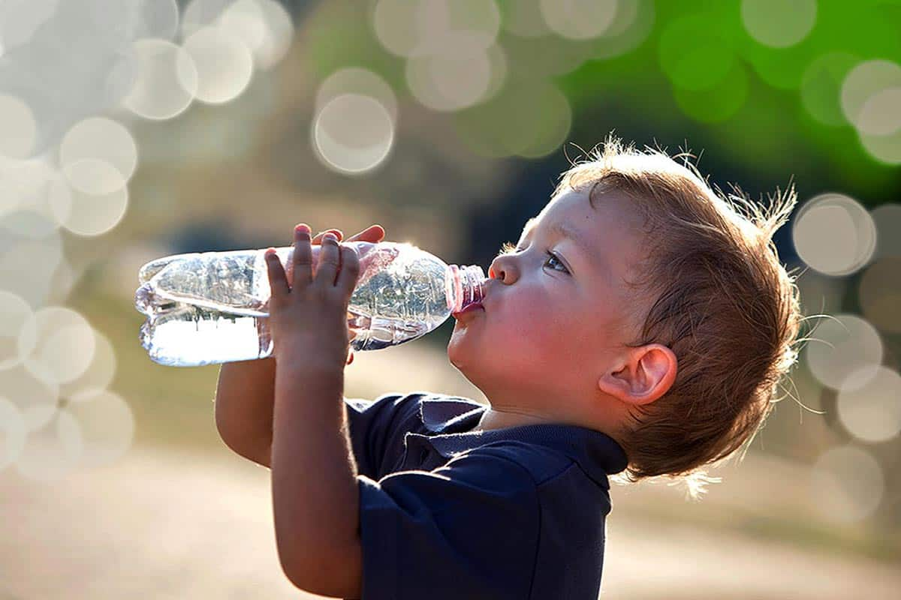
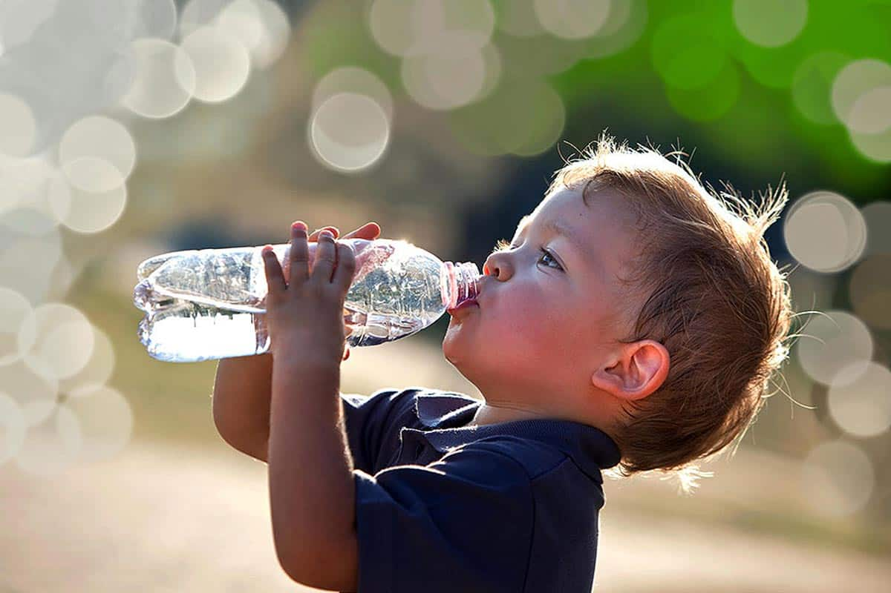

Water: is required in the body and depends on several factors, including maintaining health and level of physical activities. Also, it varies on health-related issues as well as environmental conditions such as summer.Agricultural Uses:Plants need water to survive. Seeds are not able to germinate without water. Water is required to grow crops. We know that water acts as a universal solvent and helps plants in up taking dissolved nutrients from the soil and further transporting the nutrients to various parts of the plant. Crop plants need water to make their food through the process of photosynthesis.Environmental uses: It acts as a carrier of the plant seeds to distant locations. It regulates the climate of a place as well as it also helps in maintaining the body temperature of living organisms. Tourism:Water is known to have a superior attraction to tourists when planning for travel and vacation. Ecotourism is a way to enjoy resources of water while conserving nature. The tourism business is growing and expanding every year around the world. This increase is because individuals desire to be knowledgeable about the ecosystem. Additionally, the popularity of tourism has led to the development of lake, coastal, and riverfront.Recreation Water is a form of recreation, pleasure, and instruction. Places with water have led to the development of hotels, housing, retail, convention centers, and entertainment facilities. Popular activities include sports fishing, kayaking, cruise ships, underwater diving, kayaking, and canoeing.Fishing involves catching fish out of water. It may also include catching aquatic animals such as crustaceans, mollusks, cephalopods, and echinoderms. Fish are caught as food and others for recreational pastimes.
.jpeg)

 
